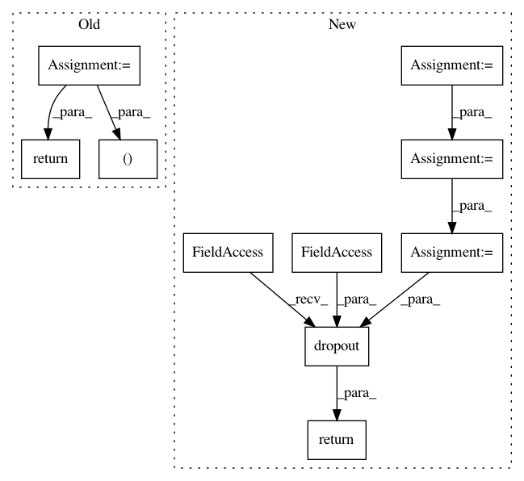

d9421968d52736a2c1d84d26ef2c335a1be4511b,examples/pointnet++_part_seg/pointnet2_part_seg.py,PointNet2PartSegmentNet,forward,#PointNet2PartSegmentNet#Any#,226
Before Change
fp2_out = self.fp2_module(fp3_out, sa1_out)
fp1_out = self.fp1_module(fp2_out, data_in)
fp1_out_x, fp1_out_pos, fp1_out_batch = fp1_out
x = self.fc2(self.dropout1(self.fc1(fp1_out_x)))
x = F.log_softmax(x, dim=-1)
return x
if __name__ == "__main__":
After Change
fp2_out = self.fp2_module(*fp3_out, *sa1_out)
x, _, _ = self.fp1_module(*fp2_out, *sa0_out)
x = F.relu(self.lin1(x))
x = F.dropout(x, training=self.training)
x = self.lin2(x)
x = F.dropout(x, training=self.training)
x = self.lin3(x)
return F.log_softmax(x, dim=-1)
In pattern: SUPERPATTERN
Frequency: 3
Non-data size: 10
Instances
Project Name: rusty1s/pytorch_geometric
Commit Name: d9421968d52736a2c1d84d26ef2c335a1be4511b
Time: 2019-05-22
Author: matthias.fey@tu-dortmund.de
File Name: examples/pointnet++_part_seg/pointnet2_part_seg.py
Class Name: PointNet2PartSegmentNet
Method Name: forward
Project Name: dpressel/mead-baseline
Commit Name: 78eba7b3f82b8420deac3cd28318dbfead0f9b9e
Time: 2018-10-30
Author: dpressel@gmail.com
File Name: python/baseline/pytorch/seq2seq/model.py
Class Name: Seq2SeqModel
Method Name: encode
Project Name: rusty1s/pytorch_geometric
Commit Name: 4e43734dd0b7f1c026069af64151a8f52f41060d
Time: 2019-07-03
Author: matthias.fey@tu-dortmund.de
File Name: torch_geometric/nn/conv/gat_conv.py
Class Name: GATConv
Method Name: forward